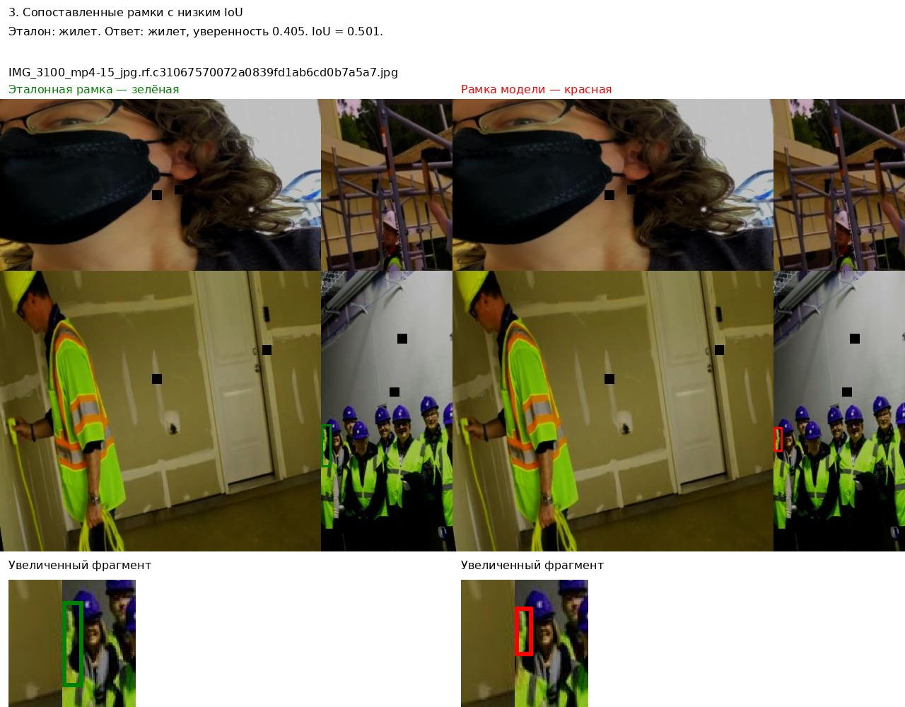
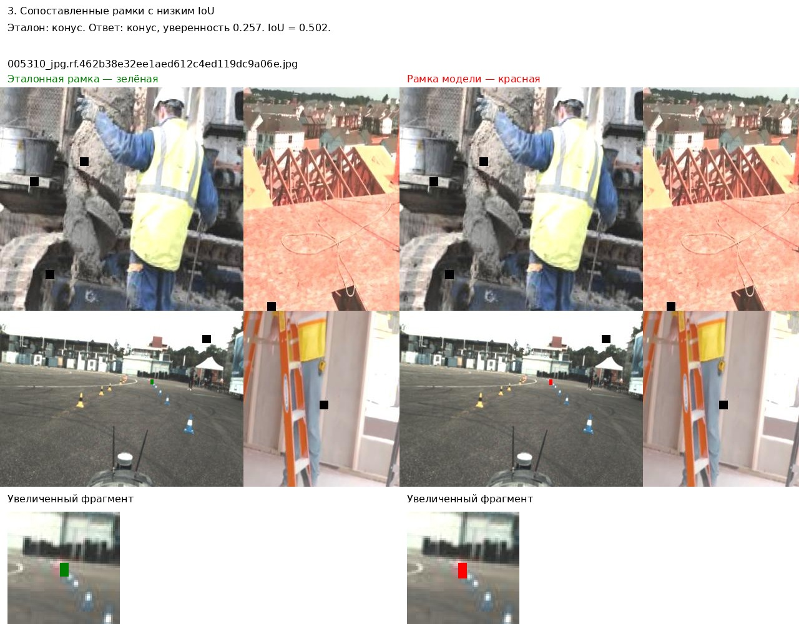
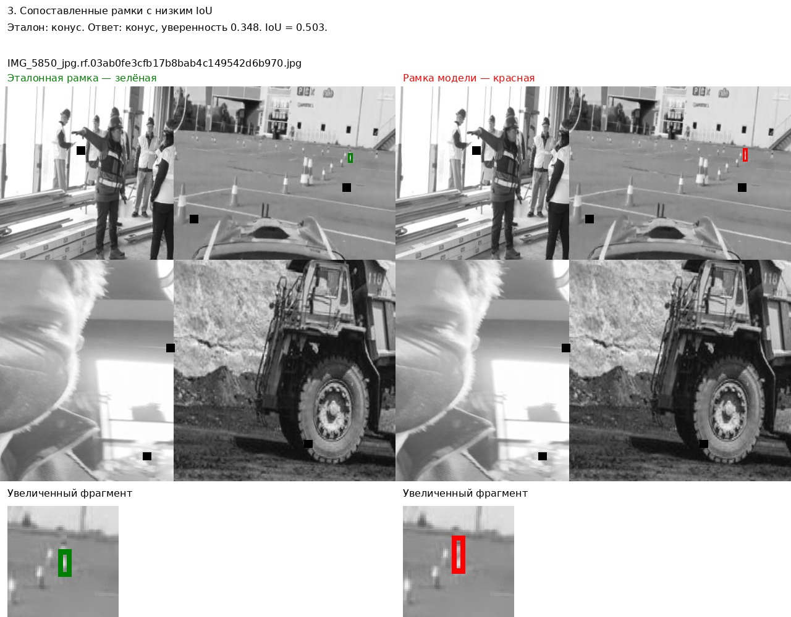
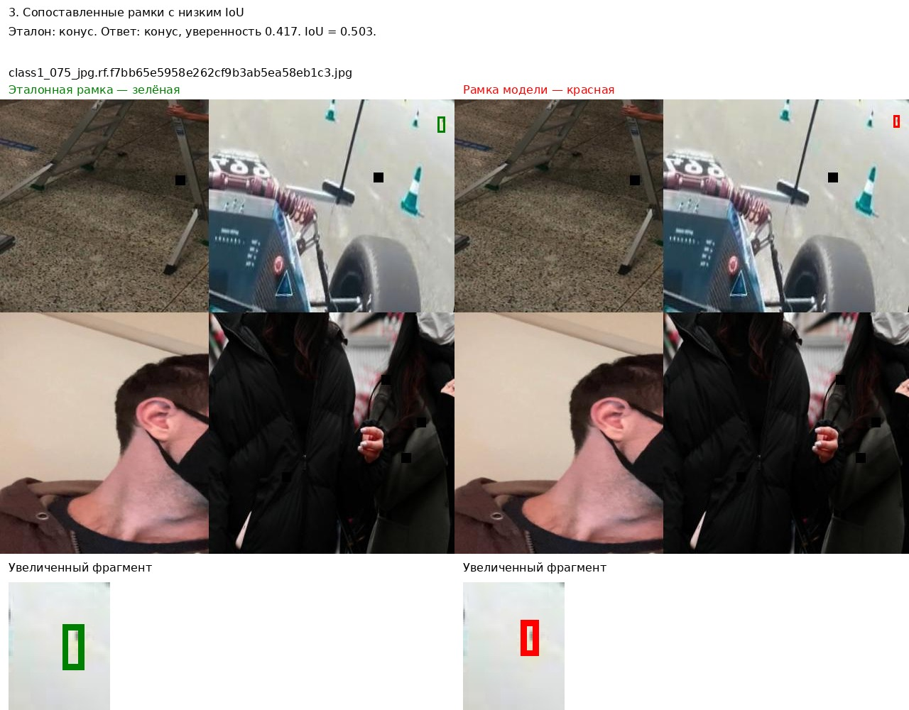

Все галереи3. Сопоставленные рамки с низким IoU
Класс совпал, но 0.5 ≤ IoU < 0.75: рамка локализована неточно.
Слева эталон, справа ответ модели. Показаны только рассматриваемые рамки.
Кандидатов: 933; показано кадров: 4.

IMG_3100_mp4-15_jpg.rf.c31067570072a0839fd1ab6cd0b7a5a7.jpg
Эталон: жилет. Ответ: жилет, уверенность 0.405. IoU = 0.501.
005310_jpg.rf.462b38e32ee1aed612c4ed119dc9a06e.jpg
Эталон: конус. Ответ: конус, уверенность 0.257. IoU = 0.502.
IMG_5850_jpg.rf.03ab0fe3cfb17b8bab4c149542d6b970.jpg
Эталон: конус. Ответ: конус, уверенность 0.348. IoU = 0.503.
class1_075_jpg.rf.f7bb65e5958e262cf9b3ab5ea58eb1c3.jpg
Эталон: конус. Ответ: конус, уверенность 0.417. IoU = 0.503.